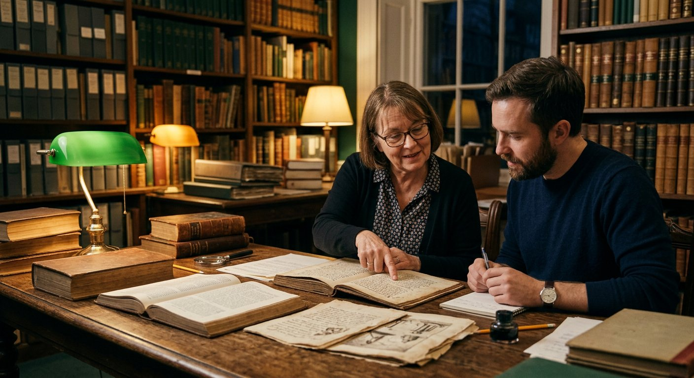

La Salle des Questions
Les douze questions que l'on pose toujours — et les réponses du musée. Quand la réponse est débattue, nous le disons. Quand elle est solide, nous montrons la preuve.
1 La Bible a-t-elle été modifiée au fil du temps ?▾
Le texte biblique n'est pas arrivé intact par miracle : il est arrivé transmis, copié, comparé, annoté — et les outils modernes permettent de mesurer cette transmission. Le Grand Rouleau d'Ésaïe (≈ −125) est identique à environ 95 % au texte massorétique mille ans plus tard ; les variantes restantes sont mineures et toutes documentées. Des éditions critiques comme la Biblia Hebraica Stuttgartensia notent chaque variante en bas de page. Il existe des différences entre manuscrits — mais elles sont connues, répertoriées, et jamais cachées.
Voir le comparateur de Qumrân →2 Pourquoi tant de traductions différentes ?▾
Parce qu'une langue vivante ne se traduit jamais une fois pour toutes. La Septante (≈ −250), la Vulgate (392-405), la Peshitta, Luther (1534), Segond (1880) : chaque époque relit le texte dans sa langue. Deux traductions peuvent différer sur un mot — « Parole » ou « Verbe » pour logos — sans que le sens ne change. Le musée vous invite même à comparer vous-même : c'est l'objet de la salle des langues.
Ouvrir le Comparateur de Textes →3 Qui a décidé des livres du canon ?▾
Personne, isolément. Le canon a émergé de la reconnaissance publique : fragment de Muratorie (≈ 170), Irénée de Lyon, lettre pascale d'Athanase (367) listant les 27 livres, conciles d'Hippone (393) et de Carthage (397). Le critère n'a jamais été la censure, mais la mémoire : quel texte porte réellement la voix des témoins ? L'origine apostolique, l'ancienneté, la conformité de la foi transmise.
Voir la formation du canon →4 Pourquoi ce musée traduit-il le nom divin par « Jéhovah » ?▾
Convention éditoriale explicite : partout où le texte hébreu porte le tétragramme יהוה (YHWH), la traduction française emploie Jéhovah — jamais « Seigneur », jamais « LORD ». Les traductions grecque et latine ont historiquement rendu le nom par kurios / Dominus ; le musée fait le choix de la proximité avec l'hébreu, et l'assume visiblement. C'est la règle n° 1 du musée.
Lire les 5 règles du musée →5 Pourquoi y a-t-il des livres apocryphes ?▾
Parce que les premiers siècles chrétiens et juifs ont été féconds : Évangile de Thomas, de Marie, de Judas, livres d'Hénoch, Pasteur d'Hermas… Ces textes éclairent la diversité de l'époque, mais n'ont pas été retenus dans le canon (origine tardive, théologie incompatible, absence de lien apostolique). Le musée les expose avec leur badge rouge, jamais confondus avec les Écritures — et signale les nuances (Hénoch est canonique en Éthiopie).
Visiter la galerie des apocryphes →6 Les manuscrits de Qumrân changent-ils la Bible ?▾
Non — ils la confirment, avec la nuance scientifique qui convient. Les 200 textes bibliques de Qumrân couvrent tous les livres de l'Ancien Testament sauf Esther. Pour Ésaïe, l'accord avec le texte massorétique atteint ~95 %, les variantes étant surtout des détails orthographiques. Certains passages (comme la fin du livre de Samuel) montrent que deux formes du texte existaient — les deux documentées, aucune cachée. C'est la meilleure nouvelle possible pour qui étudie la transmission.
Explorer Qumrân →7 Le Codex H contient-il de nouveaux textes ?▾
Non, et le musée le répète volontiers. Le Codex H (Glasgow, 24 avril 2026) a ressuscité 42 pages perdues des Lettres de Paul — pas de textes inédits. Sa révolution est méthodologique : imagerie multispectrale, apprentissage automatique, datation C14 (Sorbonne, VIe siècle), et les plus anciennes listes de chapitres pauliniens connues (appareil eutalien). Une prouesse de lecture, pas une découverte de contenu.
Voir la galerie du Codex H →8 Comment date-t-on un manuscrit ancien ?▾
Par recoupement de méthodes : datation au carbone 14 (matière organique), paléographie (forme des lettres), analyse du support (papyrus, parchemin), étude du texte et des citations d'auteurs anciens. Pour le Codex H, la C14 de la Sorbonne a confirmé les analyses paléographiques — c'est quand tout concorde que la date est solide. Quand les méthodes divergent, le musée présente les deux hypothèses (comme pour P64 Matthieu : 40-60 selon Thiede, 150-200 selon le consensus).
Voir la controverse P64 →9 Les différences entre manuscrits sont-elles graves ?▾
Elles sont réelles — et c'est précisément pour cela que le musée les montre. Un scribe qui saute une ligne, une orthographe qui varie, un mot remplacé par un synonyme : les spécialistes en recensent des milliers. Aucune ne change les grands faits ni les enseignements centraux. Et surtout, une différence documentée vaut mieux qu'un accord silencieux : la philologie les note toutes, édition critique après édition critique. La dispute porte sur des mots ; la transmission, elle, tient.
Comparer cinq passages →10 Pourquoi pas de croix ni de symboles religieux sur ce site ?▾
Choix éditorial assumé : VERBUM présente la Bible comme un texte et un patrimoine — accessibles à tous, croyants ou non. Le musée ne fait pas de prosélytisme : il montre les documents, les dates, les preuves, les débats. Les symboles confessionnels sont laissés de côté pour que chaque visiteur, quelle que soit sa conviction, puisse examiner les faits sans barrière. La conviction est affaire personnelle ; la transmission est affaire de documents.
Lire la méthode complète →11 Ce musée est-il affilié à une Église ou à un groupe ?▾
Non. VERBUM est un projet éducatif et culturel, indépendant. Ses sources sont publiques : Université de Glasgow, BnF, British Museum, Musée d'Israël, British Library, bibliothèque vaticane, revues scientifiques. Quand la recherche est divisée, les deux positions sont exposées sans préférence. Quand une affirmation dépasse les preuves (le parallèle du papyrus Ipuwer, par exemple), elle est signalée comme hypothèse.
Voir la liste des sources →12 Par où commencer, si je n'ai que dix minutes ?▾
La Grande Frise : 36 jalons cliquables de −1450 à 2026, filtrables par thème. Dix minutes suffisent pour voir l'ampleur du fil. Ensuite, choisissez la salle qui vous parle — Qumrân pour l'émotion, le Codex H pour l'actualité, les Preuves pour les rois gravés dans la pierre. Et si vous avez une heure : la visite guidée pas-à-pas, en dix étapes.
Commencer par la Grande Frise →
« La salle des questions est peut-être la plus importante du musée : c'est celle où la curiosité devient la méthode. »